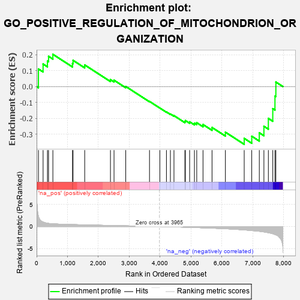

| | | Dataset | 7d |
| Phenotype | NoPhenotypeAvailable |
| Upregulated in class | na_neg |
| GeneSet | GO_POSITIVE_REGULATION_OF_MITOCHONDRION_ORGANIZATION |
| Enrichment Score (ES) | -0.36413974 |
| Normalized Enrichment Score (NES) | -1.0007938 |
| Nominal p-value | 0.47240052 |
| FDR q-value | 0.8748523 |
| FWER p-Value | 1.0 |
Table: GSEA Results Summary

Fig 1: Enrichment plot: GO_POSITIVE_REGULATION_OF_MITOCHONDRION_ORGANIZATION
Profile of the Running ES Score & Positions of GeneSet Members on the Rank Ordered List
| PROBE | GENE SYMBOL | GENE_TITLE | RANK IN GENE LIST | RANK METRIC SCORE | RUNNING ES | CORE ENRICHMENT | | 1 | RAC2 | | | 60 | 2.442 | 0.1110 | No |
| 2 | RHOU | | | 210 | 1.031 | 0.1423 | No |
| 3 | GSK3A | | | 351 | 0.745 | 0.1608 | No |
| 4 | BAX | | | 387 | 0.711 | 0.1909 | No |
| 5 | HTRA2 | | | 527 | 0.621 | 0.2035 | No |
| 6 | UBL5 | | | 1162 | 0.452 | 0.1456 | No |
| 7 | TFDP1 | | | 1180 | 0.450 | 0.1653 | No |
| 8 | DDHD2 | | | 1557 | 0.381 | 0.1364 | No |
| 9 | SAE1 | | | 2390 | 0.247 | 0.0436 | No |
| 10 | HUWE1 | | | 2506 | 0.225 | 0.0401 | No |
| 11 | PDCD5 | | | 2885 | 0.169 | 0.0007 | No |
| 12 | FIS1 | | | 3654 | 0.051 | -0.0936 | No |
| 13 | VPS35 | | | 3989 | -0.006 | -0.1354 | No |
| 14 | VPS11 | | | 4202 | -0.041 | -0.1601 | No |
| 15 | OPA1 | | | 4330 | -0.065 | -0.1729 | No |
| 16 | CDC37 | | | 4446 | -0.084 | -0.1833 | No |
| 17 | PLD6 | | | 4799 | -0.157 | -0.2200 | No |
| 18 | FBXW7 | | | 4816 | -0.161 | -0.2142 | No |
| 19 | ADCK1 | | | 4953 | -0.188 | -0.2222 | No |
| 20 | MMP9 | | | 5108 | -0.227 | -0.2305 | No |
| 21 | HDAC6 | | | 5183 | -0.244 | -0.2280 | No |
| 22 | FZD5 | | | 5386 | -0.292 | -0.2392 | No |
| 23 | CASP8 | | | 5678 | -0.369 | -0.2580 | No |
| 24 | ATG13 | | | 6110 | -0.508 | -0.2876 | No |
| 25 | GSK3B | | | 6719 | -0.768 | -0.3269 | Yes |
| 26 | DNM1L | | | 6963 | -0.913 | -0.3131 | Yes |
| 27 | MFN2 | | | 7208 | -1.081 | -0.2914 | Yes |
| 28 | WDR35 | | | 7357 | -1.225 | -0.2506 | Yes |
| 29 | DDHD1 | | | 7501 | -1.397 | -0.2008 | Yes |
| 30 | MCU | | | 7644 | -1.637 | -0.1392 | Yes |
| 31 | BOK | | | 7715 | -1.817 | -0.0599 | Yes |
| 32 | RNF31 | | | 7744 | -1.895 | 0.0286 | Yes |
Table: GSEA details [plain text format]
 Fig 2: GO_POSITIVE_REGULATION_OF_MITOCHONDRION_ORGANIZATION: Random ES distribution
Fig 2: GO_POSITIVE_REGULATION_OF_MITOCHONDRION_ORGANIZATION: Random ES distribution
Gene set null distribution of ES for GO_POSITIVE_REGULATION_OF_MITOCHONDRION_ORGANIZATION